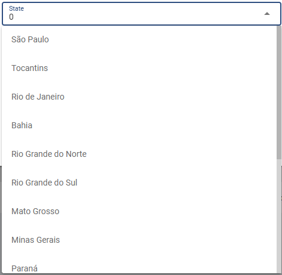

Theaters
Aguardando a ultima versao para incluir imagem
Criação dos cinemas que terão o Player Mog.
Nome: Nome do cinema.
Code: Código do cinema. Esse código é fornecido pelo cliente.
State: Estado onde o cinema está localizado. Para criação de State, verificar
 Start Hours: Hora de abertura do cinema. Deve-se considerar o horário militar para preenchimento do campo.
End Hours: Hora de fechamento do cinema. Deve-se considerar o horário militar para preenchimento do campo.
Prevent Settings: Bloqueio de prevenção de sync. Esse bloqueio afeta todos os players do cinema.
General: Bloqueio completo do cinema. Com este item ativado, os players do cinema não receberão nenhuma atualização.
Config Sync: Bloqueio de config do cinema.
Playlist Sync: Bloqueio de atualiação das playlists do cinema.